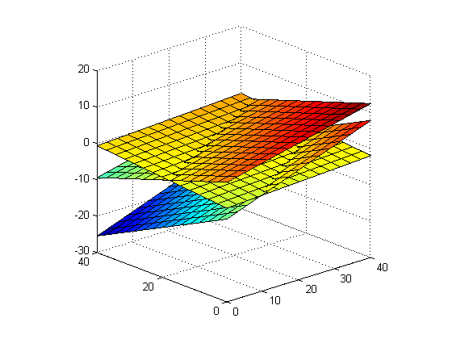

Illustration of a piecewise linear surface
setSeed(10);
figure(); hold on;
nsurfaces = 3;
for i=1:nsurfaces
x = randn(10, 1);
y = randn(10, 1);
z = randn(10, 1);
P = [mean(x), mean(y), mean(z)];
[U, S, V] = svd([x-P(1), y-P(2), z-P(3)], 0);
N = -1/V(end, end)*V(:, end);
W(1)=N(1); W(2)=N(2); W(3)=-P*N;
xs = linspace(0, 40, 15)';
ys = linspace(0, 40, 15)';
[Xs, Ys] = meshgrid(xs, ys);
Z = (W(3) + W(2)*Xs + W(3)*Ys + 50*randn)/10;
surf(xs, ys, Z);
end
grid on;
axis square;
set(gca, 'xdir', 'reverse');
view([48, 20]);
printPmtkFigure('piecewiseLinearSurface');
